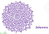
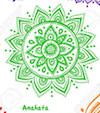

The Chakras
The Sanskrit word Chakra literally translates to wheel or disk.
In yoga, meditation, and Ayurveda
this term refers to wheels of energy throughout the body.
There are seven main chakras, which align the spine,
starting from the base of the spine through to the crown of the head.
To visualize a chakra in the body,
imagine a swirling wheel of energy where matter and consciousness meet.
This invisible energy called Prana is a vital life force
which keeps us vibrant, healthy, and alive.
- Root Chakra
- Connects all of your energy with the Earth,
which is called grounding. - Sacral
- Home of the creative life force energy
that helps you enjoy your
life here on Earth. - Solar Plexus
- Seat of your personal power.
You can physically feel
confidence and wisdom in its location. - Heart
- Love for others and love for yourself,
also associated with health and healing.  Throat
Throat - Lets you speak your truth with clarity.
Connected to the compassion and love
you have for yourself and others. - 3rd Eye
- Receives information from sources
outside of the five senses.  Crown
Crown - Consciousness energy that connects us
to the entire universe.
The seed of a universal energy.